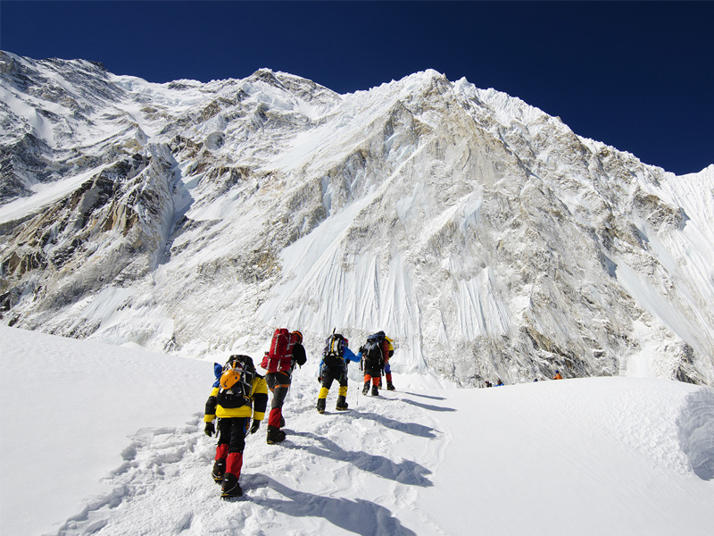

Tour

"I embarked on an unforgettable journey to Chitlang, Everest Base Camp, and Ghandruk, each destination offering a unique blend of natural beauty, culture, and adventure. Chitlang welcomed me with its serene landscapes, lush terraces, and historic sites, while Everest Base Camp tested my endurance and rewarded me with breathtaking views of the Himalayas. In Ghandruk, I immersed myself in the rich traditions of the Gurung people, enjoying warm hospitality and stunning vistas. This tour was not just about exploring places, but about experiencing Nepal's deep-rooted beauty and diversity firsthand."
Everest Base camp
 A tour is a journey where I explore new places, experience different cultures, and discover hidden gems along the way. I plan my itinerary based on interests—whether it's historical landmarks, breathtaking landscapes, or vibrant city life. Traveling allows me to meet new people, taste local cuisine, and immerse myself in traditions that make each destination unique. Every tour broadens my perspective, giving me unforgettable memories and stories to share.Nepal is a land of breathtaking landscapes, rich culture, and thrilling adventures, making it a must-visit destination for travelers. Nestled in the Himalayas, it boasts the world’s highest peak, Mount Everest, along with countless trekking trails like Annapurna Circuit and Langtang Valley.
A tour is a journey where I explore new places, experience different cultures, and discover hidden gems along the way. I plan my itinerary based on interests—whether it's historical landmarks, breathtaking landscapes, or vibrant city life. Traveling allows me to meet new people, taste local cuisine, and immerse myself in traditions that make each destination unique. Every tour broadens my perspective, giving me unforgettable memories and stories to share.Nepal is a land of breathtaking landscapes, rich culture, and thrilling adventures, making it a must-visit destination for travelers. Nestled in the Himalayas, it boasts the world’s highest peak, Mount Everest, along with countless trekking trails like Annapurna Circuit and Langtang Valley.
Ghandruk
 Beyond adventure, Nepal is a spiritual sanctuary, home to Lumbini, the birthplace of Buddha, and numerous monasteries that offer meditation and tranquility. Thrill-seekers can indulge in paragliding, white-water rafting, bungee jumping, and exhilarating mountain flights over Everest. The country’s warm hospitality, flavorful cuisine, and vibrant festivals create unforgettable experiences for visitors. Whether you're exploring historic sites, trekking through rugged trails, or simply soaking in the mesmerizing views, Nepal guarantees an extraordinary journey with a perfect blend of adventure, culture, and serenity.
Beyond adventure, Nepal is a spiritual sanctuary, home to Lumbini, the birthplace of Buddha, and numerous monasteries that offer meditation and tranquility. Thrill-seekers can indulge in paragliding, white-water rafting, bungee jumping, and exhilarating mountain flights over Everest. The country’s warm hospitality, flavorful cuisine, and vibrant festivals create unforgettable experiences for visitors. Whether you're exploring historic sites, trekking through rugged trails, or simply soaking in the mesmerizing views, Nepal guarantees an extraordinary journey with a perfect blend of adventure, culture, and serenity.
Chitlang


Ghandruk Chitlang Everest base camp Pokhara